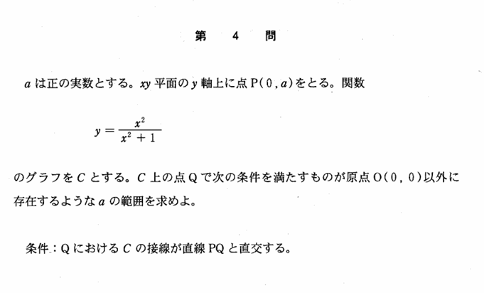

2002年 第4問
微分

分析
条件を立式し、定数分離し、関数の値域を求めるだけの問題である。この年ではこのような処理問題が多い。処理問題をどれだけ正確に、かつ体系化した解法で迷わず解ける力を問うている。
背景
背景に「曲率半径」がある。$$曲率半径R=\frac{\{1+(f'(x))^2\}^{\frac{3}{2}}}{|f''(x)|}$$この式で$f(x)=\frac{x^2}{x^2+1}\ $として$x=0$を代入すると、$x=0$での曲率半径が$\frac{1}{2}\ $だとわかる。
これは$\ x=0\ $付近の$\ f(x)\ $を最も近似するのが半径$\ \frac{1}{2} \$,中心$ \ \frac{1}{2} \ $の円であることを表している。
$y=f(x)\ $の曲線をD、半径$\ a \$,中心$ \ a \ $の円を円Cとすると、$0\lt a \leq frac{1}{2}\ $ のとき円Cと曲線Dの交点は1個、$\frac{1}{2}\lt a$のとき円Cと曲線Dの交点は2個となることから、ある程度直感的に想像することが可能である。